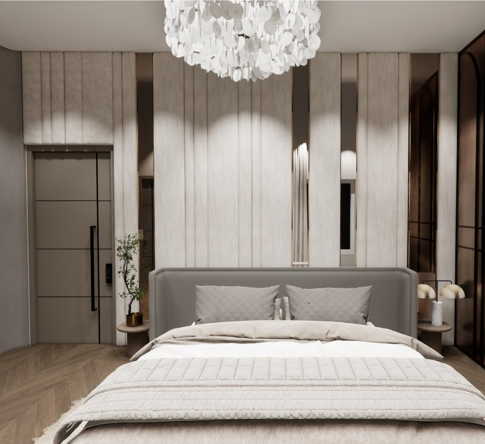
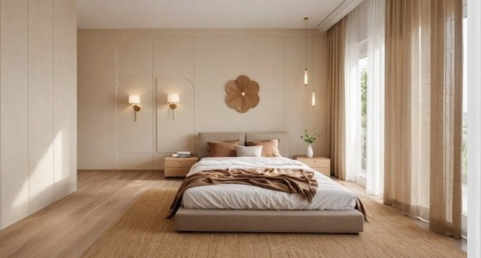
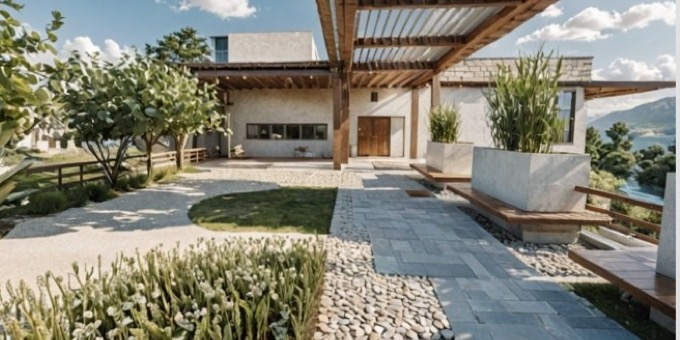
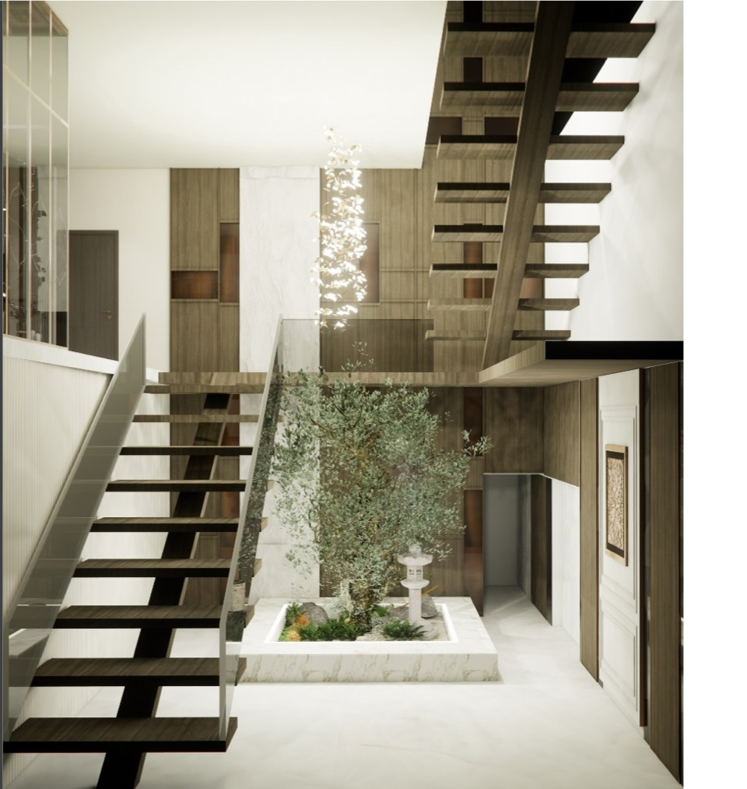
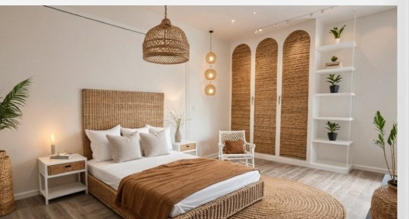
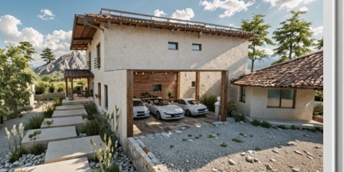
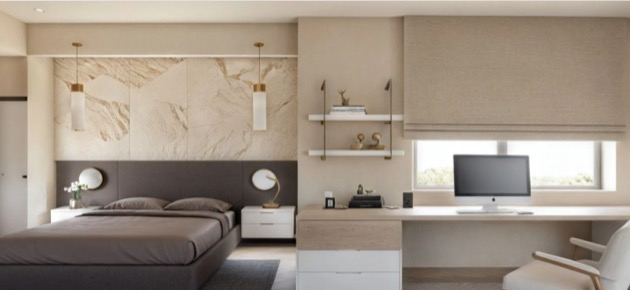
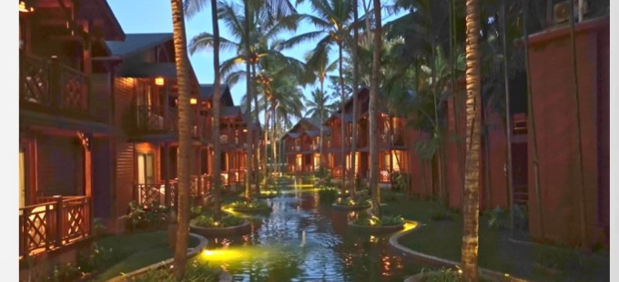
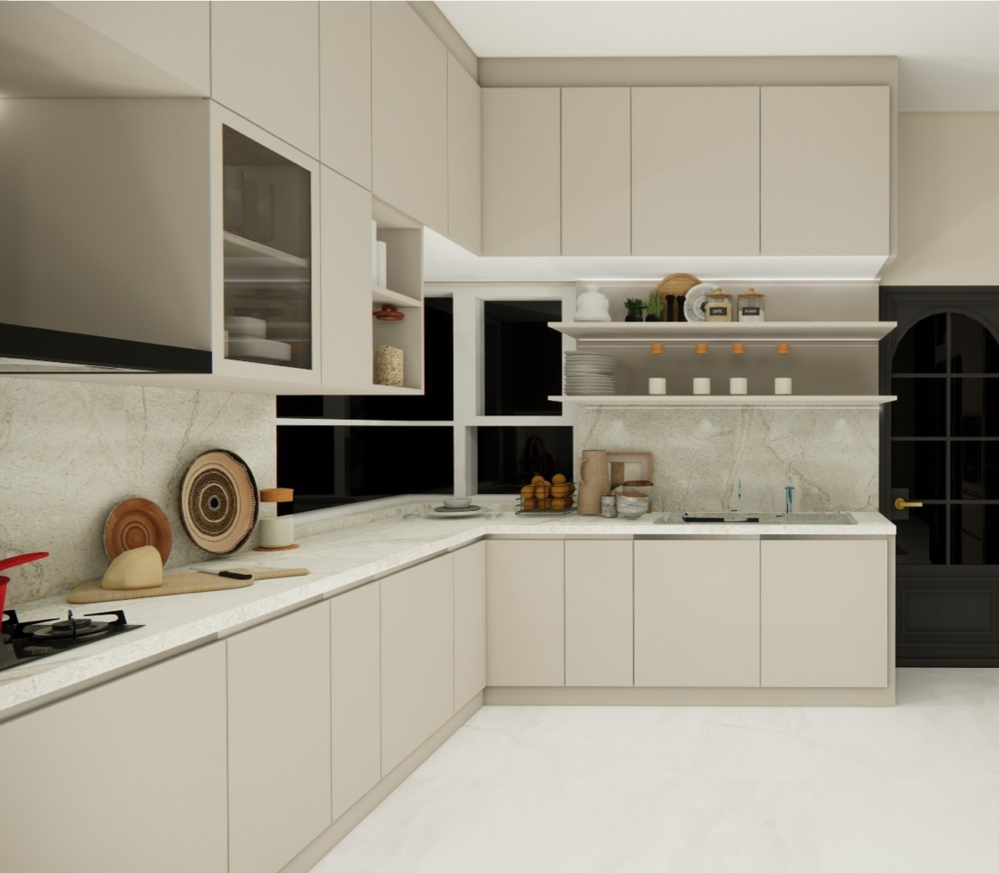
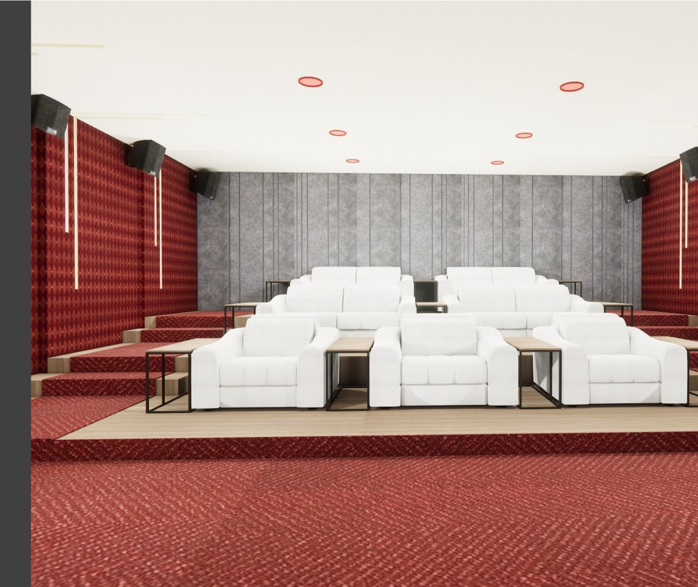

Architecture + Interiors
Homes, villas, and hospitality spaces shaped with quiet luxury.
I am Namrata Mahapatra, an architect and interior designer based in Bangalore. My work brings together spatial clarity, material warmth, and a calm, highly personal design process for clients building homes, retreat properties, and boutique guest experiences.
From early concept direction to presentation-led design development and execution support, I like creating spaces that feel elegant, composed, and deeply lived in rather than merely decorated.
10+ years of design practice
Private residences, villas, farmhouses, hospitality
Concept to execution support



Studio Direction
A portfolio shaped by restraint, atmosphere, and full-home thinking.
My projects are grounded in architectural planning first and then refined through texture, light, and material depth. I am drawn to spaces that feel calm and resolved, luxurious without excess, and personal without becoming predictable.
The work shown here includes both commissioned interiors and design concepts developed for private homes and hospitality settings. Across each project, the intention stays the same: create an experience that feels coherent from the first arrival point to the most intimate room in the house.
Portfolio
A curated selection of residences and hospitality environments.
These projects range from full-home interior proposals to luxury retreat and hospitality concepts. Together, they show how I think about mood, materiality, scale, and flow.

Full Residence Design
Raj Ville Residence
A room-by-room interior concept spanning the entrance, staircase, kitchen, courtyard, private rooms, theater, and terrace areas as one coherent home.

Private Residence Concept
Brunton Miraya House
A soft, pared-back home language shaped by pale timber, natural textures, filtered light, and quiet restraint.

Luxury Retreat Concept
Thea’s Farmhouse, Alibaug
A landscape-led retreat concept bringing together rustic stone, white stucco, open skies, and a slower, more soulful way of living.

Ultra-Luxury Residence
Bungalow 155
A high-value private residence imagined through bespoke finishes, European references, statement materials, and strong interior detailing.

Hospitality Concept
Royal Orchid Resorts & Hotels
A resort design language defined by water, tropical landscaping, warm lighting, and a slow, immersive arrival experience.
Selected Projects
Three projects that express the studio’s design point of view most clearly.


Full Residence Design Proposal
Raj Ville Residence
For Raj Ville, I developed a complete home proposal covering the arrival sequence, staircase, kitchen, courtyard, bedrooms, bathrooms, balconies, theater, terrace, and utility zones. The goal was not to treat each room as a separate exercise, but to shape the entire home as one continuous experience.
The palette moves through warm neutrals, marble, wood, fluted surfaces, sculptural lighting, and carefully framed focal moments that elevate the everyday without making the home feel overworked.
Private Residence Concept
Brunton Miraya House
Brunton Miraya explores a softer, more pared-back domestic mood. The rooms are anchored in pale timber, woven textures, warm stone, and filtered daylight, creating a home that feels restful, grounded, and quietly luxurious.
It is a good expression of how I approach simplicity: not empty minimalism, but a considered sense of ease where every element has clarity, softness, and purpose.
Luxury Retreat Concept
Thea’s Farmhouse, Alibaug
This project was conceived as a slower, landscape-led retreat. Mediterranean cues, shaded walkways, rustic stone, open courtyards, and textured surfaces come together to create a property that feels both indulgent and connected to its setting.
It reflects my interest in second homes and getaway properties where architecture, interiors, and outdoor experience need to be imagined as a single emotional idea.
Services
Clients usually engage me when they need both design sensitivity and practical clarity.
Private Residences
Full-home interiors for apartments, villas, and independent houses shaped around comfort, personality, and long-term value.
Villas & Retreat Homes
Leisure properties and second homes designed with stronger landscape awareness, slower rhythms, and a richer sense of escape.
Boutique Hospitality
Guest-facing spaces developed around atmosphere, arrival, material character, and memorable spatial storytelling.
Design Development
Concept direction, mood boards, material palettes, room-by-room detailing, presentations, and execution-oriented design support.
Approach
A polished process that keeps creative decisions calm, clear, and well guided.
Brief & Taste Mapping
Understanding how the client wants the space to feel, function, and represent their way of living.
Concept & Mood
Building the emotional direction through references, spatial thinking, layout moves, and material language.
Design Development
Refining the project room by room through presentations, palettes, details, and more resolved interior intent.
Execution Support
Carrying the design into reality through coordination, decision-making support, and consistent design judgment.
Profile
An architect and interior designer with design depth and real delivery experience.
I trained at the Manipal School of Architecture and Planning and have spent more than a decade working across residential, hospitality, commercial, and institutional projects. My experience spans concept design, client presentations, material development, sales-driven design conversations, team leadership, and on-ground execution support.
Before building this body of independent work, I worked across KOD Architects, JAPCON Architects, Livspace, and Sobha. That mix of studio, site, and client-facing experience continues to shape the way I design today: creatively, collaboratively, and with a strong sense of responsibility to the finished result.
Start A Project
For clients looking for a home or guest experience with presence, polish, and lasting warmth.
If you are planning a new residence, refreshing an existing home, developing a villa, or shaping a boutique hospitality space, I would be glad to hear about the brief, the location, and the experience you want the project to hold.
mahapatra.namrata@gmail.com
+91 90351 04889
Bangalore-based studio working on residential, villa, farmhouse, and hospitality projects.